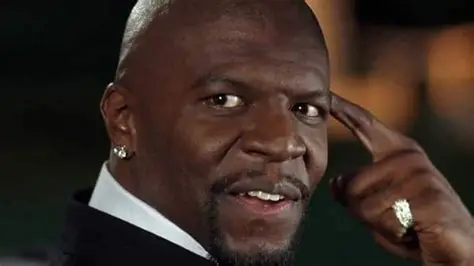
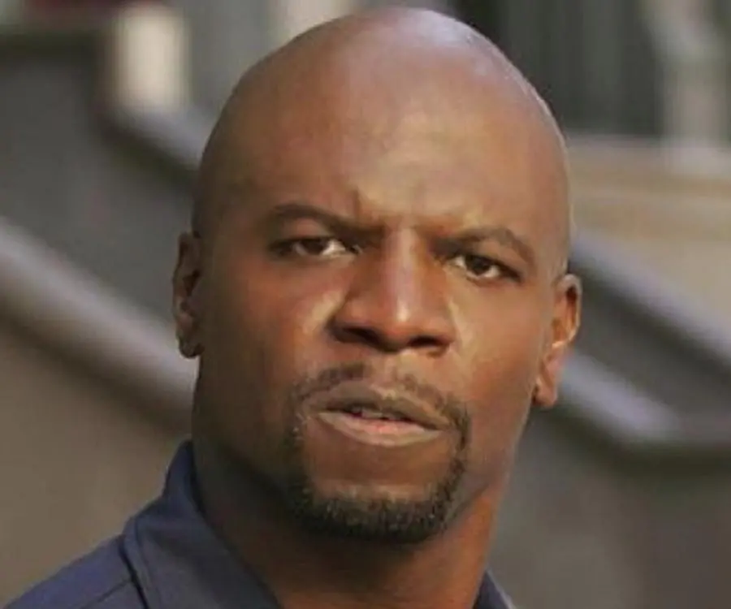

Filmes e Séries
Obras marcantes da carreira de Terry Crews

As Branquelas (2004)
Um dos filmes mais conhecidos da carreira de Terry Crews, onde ele ganhou grande destaque pelo seu humor e carisma.

Todo Mundo Odeia o Chris (2005–2009)
Série muito famosa em que Terry Crews interpretou Julius, pai do protagonista, personagem marcante e muito querido pelo público.

Brooklyn Nine-Nine (2013–2021)
Série de comédia policial em que Terry Crews interpretou Terry Jeffords, um dos personagens mais carismáticos da produção.